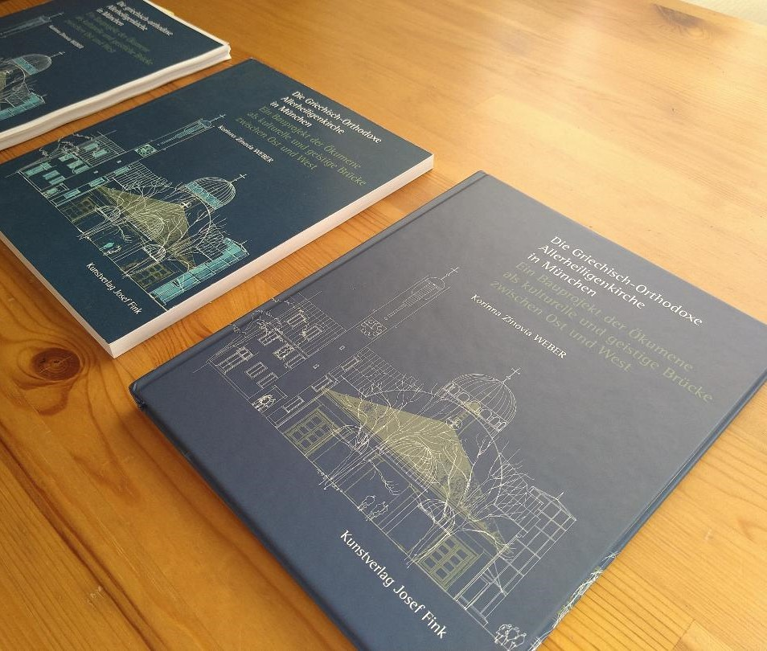
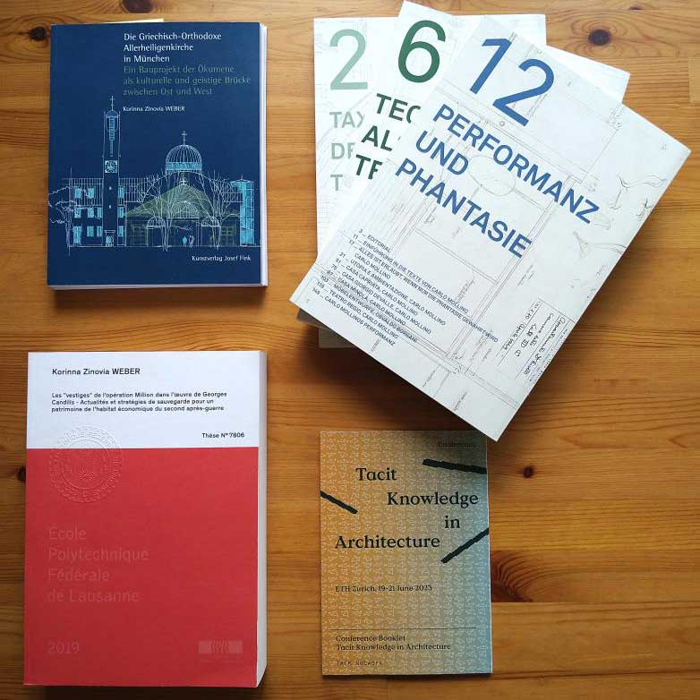
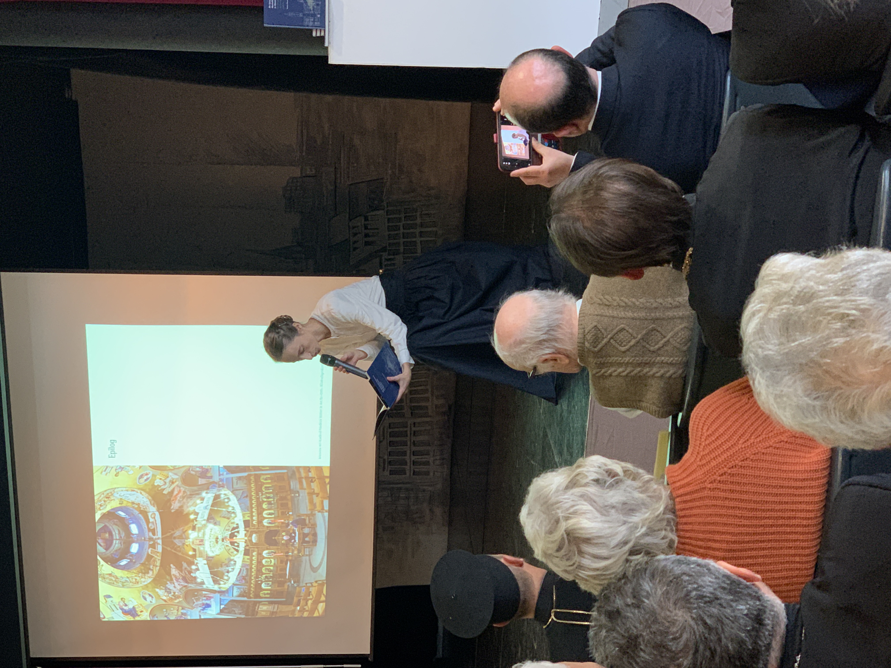

Hallo, ich bin Korinna!
Ich bin als Wissenschaftlerin im Bereich Architektur und Denkmalpflege sowie als freiberufliche Autorin und Architekturhistorikerin tätig. Mich begeistert die Forschung über Architektur und Projekte an ihr Ziel zu bringen. Gerne setze ich mich für die Anerkennung von Gebäuden ein, die nicht unmittelbare Wertschätzung in unserer Gesellschaft erfahren. Mehr über meinen Lebensweg hier.
Anfang Oktober 2023 ist mein Buch «Die Griechisch-Orthodoxe Allerheiligenkirche» beim renommierten Kunstverlag Josef Fink erschienen.
Das Buch befasst sich mit einem besonderen Umbau. Aus der 1929 erbauten Röm.-Kath. Allerseelenkirche ist in den 1990er Jahren die Gr.-Orth. Allerheiligenkirche geworden. Es soll ein Beitrag zu „proaktiver“ Denkmalpflege für einen noch jungen Sakralbau sein, der noch nicht als Denkmal anerkannt ist. Bereichert wird das Buch durch Vorwörter von Metropolit Augoustinos von Deutschland, Kardinal Friedrich Wetter und Prof. Andreas Putz von der TU München und bisher nicht publiziertem Archivmaterial zu beiden Kirchen. Erzpriester Apostolos Malamoussis begleitete von Anfang an das Buchprojekt als Vertreter der Kirche und gab mir auch den Anstoß eine "kurze" Zusammenfassung der Geschichte aufzuschreiben. Schnell wurde mir klar, dass das Stoff für ein ganzes Buch ist...
Von der ersten Zeile im Manuskript bis zum fertigen Buch sind 14 Monate vergangen. Das Endprodukt entstand in engem Dialog mit dem Verlag, meinem graphischen Berater Andreas Thuy und wurde mit viel Aufmerksamkeit von Rudolf Winterstein lektoriert. Die Druckkosten wurden zum Teil von der Geschwister Boehringer Ingelheim Stiftung mitfinanziert. Das Buch wurde erstmalig als Workshop im Zentralinstitut für Kunstgeschichte am 25. Oktober 2023 vorgestellt. Die offizielle Buchvorstellung fand am 27. November 2023 vor 100 Gästen in München statt. Mehr Informationen hier.
Am 17. November 2023 führte Karin Berkemann von moderneRegional ein Gespräch mit mir zu meiner Forschung.
Am 22. November 2023 erschien ein Interview mit mir über das Buch in der Griechenlandzeitung.
Stimme(n) zum Buch:
"(…) Inwiefern Beziehungen und gesellschaftliche Gegebenheiten (Gesetze und Mehrheitsmeinungen) ein architektonisches Gebäude beeinflussen ist wirklich ein Thema, welches mit extrem viel Liebe zum Detail hier behandelt wird (z. B. beim Glockenturm). Die griechische-orthodoxe Geschichte wird anhand ihrer Baukultur mit tiefen Einblicken erzählt (Bemalungen, aber auch die Situation mit den weißen Kykladen, die das Bild von Griechenland aus zentraleuropäischer, touristischer Sicht prägen). Die Qualität der Pläne, Layout und Fotos ist extrem hoch. Nicht nur das Material selbst sondern auch die Platzierung bei den passenden Themen. Fotos vom Bau helfen sehr ein Verständnis der Materialität zu bekommen und den Neubau in seiner Zeit zu lesen und das Gesamtthema von Architektur nicht als lineare Entwicklung, sondern als komplexes System von Raum-Zeit-Abhängigkeiten zu verstehen. Das Kapitel zur Denkmalpflege gibt dem Lesenden ein gutes Verständnis über wie die Denkmalpflege funktioniert und beleuchtet so nochmals einen weiteren Aspekt der Architekturpolitik. Der Epilog mit deiner persönliche Beziehung zu der Situation, die der wissenschaftlichen Arbeit einmal mehr eine persönliche Note verleiht, aber auch nochmals die Tiefe der Verflechtungen einen Schritt weiter treibt, indem die vierte Wand und somit die vermeintliche Objektivität absichtlich gebrochen wird." Martin Roesch, MSc ETH Architektur
"(...) die großartigen Fotos der Außen- und Innenaufnahmen, die präzisen Zeichnungen über die Umbauphase und die Fotos über den liturgischen Vollzug der Umwandlung aus einem ehemaligen katholischen Gotteshaus in eine Griechisch-Orthodoxe Kirche im Beisein von Metropolit Augoustinos und Kardinal Friedrich Wetter machen diese Publikation zu einem einzigartigen Dokument einer Kirchenneu-Nutzung durch eine andere Konfessionskirche." Dr. Christian Hohmann, Pfarrer für Orthodoxie, Catholica und Arbeitsgemeinschaft Christlicher Kirchen in NRW
Neben und während meiner beruflichen Tätigkeit konnte ich diverse Erfahrungen in der Erstellung von Publikationen sammeln. Dabei kenne ich sowohl die Perspektive als Autorin als auch als Herausgeberin.
Zwischen 2022 und 2023 habe ich ein Buch über einen Kirchenbau der 1990er Jahre geschrieben, gestaltet und gelayoutet. Es ist 2023 beim Kunstverlag Josef Fink erscheinen.
2020 habe ich meine Doktorarbeit (700 Seiten), ausgerichtet für ein wissenschaftliches Publikum, in ein Leser-freundliches Manuskript (300 Seiten) gewandelt, das 2024 bei einem französischen Verlag erscheinen wird.
Besonders spannend war es die experimentelle Publikationsformen des TACK-Projektes als Projektmanagerin an der ETH Zürich zwischen 2019 und 2023 zu begleiten. Die hauptsächlich digital publizierten Beiträge sind als Print-on-Demand-Bücher bestellbar und können inhaltlich von der Leserschaft selbst zusammengesetzt werden.
Während meiner Arbeit an der ETH Zürich habe ich zwischen 2019 und 2022 für Prof. Markus Peter 11 Reader (je 200 Seiten) überarbeitet und bis zum Druck begleitet.
Seit August 2023 unterstütze ich als Mit-Herausgeberin einen Ausstellungskatalog an der Ecole Polytechnique Fédérale de Lausanne, der 2024 erscheinen soll.
Lust auf eine Zusammenarbeit? Gerne begleite ich Sie auf dem Weg zu Ihrer wissenschaftlichen Publikation. Schreiben Sie eine Email an kori.z.weber[at]gmail.com
Im Rahmen meines aktuellen Buches «Die Griechisch-Orthodoxe Allerheiligenkirche in München» biete ich Vorträge und Lesungen mit verschiedenen Schwerpunkten an:
Die Vorträge werden auf Deutsch, Englisch und Französisch vor Ort und digital angeboten. Ich bringe eine langjährige Vortragserfahrung mit und mir ist es wichtig jeden Vortrag an das jeweilige Publikum anzupassen.
Interesse an einer Lesung? Schreiben Sie gerne eine Email an kori.z.weber[at]gmail.com
Vor der Digitalisierung produzierte ein Architekturbüro unzählige Akten in Papierform. Oft ist die nachfolgende Generation mit der Masse an Dokumenten überfordert oder braucht neue Lagerfläche. In anderen Fällen entsorgen die Urheber selbst noch im hohen Alter wertvolles Material ohne den Wert der eigenen Arbeit in einem weiteren Kontext einschätzen zu können. Schnell wird voreilig etwas weggeworfen oder geschreddert… In vielen Fällen geht dabei wertvolles historisches Material verloren. Daher biete ich archivische Bewertung und Beratung zum Umgang von Nachlässen im Zusammenhang mit Architektur.
Sie wissen nicht wohin mit alten Kisten voller Pläne und Fotos? Dann schreiben Sie mir.
2024
Artikel über einen ungebauten Sakralbau in München, Berlin, erscheint im Herbst
2024
Monographie «Les ‘vestiges’ de l’opération Million dans l’oeuvre de Georges Candilis», Paris
2023
Monographie «Die griechisch-orthodoxe Allerheiligenkirche in München - Ein Bauprojekt der Ökumene als kulturelle und geistige Brücke zwischen Ost und West» Kunstverlag Josef Fink, Lindenberg im Allgäu (ISBN: 978-3-95976-457-5) Druckkostenzuschuss durch die Geschwister Boehringer Ingelheim Stiftung für Geisteswissenschaften
2022
Artikel « Candilis-Josic-Woods : interdépendance et individualité d’une œuvre collective », in: Kollektiv und Kollaborativ : Positionen gemeinschaftlichen Arbeitens in Architektur und Planung vom 20. Jahrhundert bis zu Gegenwart, Bamberg 2022, DOI : 10.20378/irb-55457
2019-2022
11 Reader des Lehrstuhls für Architektur und Konstruktion zur Prüfungsvorbereitung der Studierenden, ETH hochschulinterne Publikationen
2019
Dissertation «Les ‘vestiges’ de l’opération Million dans l’oeuvre de Georges Candilis - Actualités et stratégies de sauvegarde pour un patrimoine de l’habitat économique du second-après guerre» bisher EPFL intern publiziert; DOI : 10.5075/epfl-thesis-7806
2019
Artikel «The (anti-)monumentality of post-war social housing» aus dem Konferenzbeitrag für «On Monumentality» der Hellenic Open University hervorgegangen, wird 2024 publiziert
2019
Artikel «(Weight)lifting the Olympic Heritage - The “White Elephants” of Athens 2004» gemeinsam mit Margarita Agriantoni, in: Hefte des deutschen Nationalkommitees LXXVI von ICOMOS, Berlin 2021. Hier lesen.
2015
Artikel «Georges Candilis - Architect, Urban Planer and Author with communist ideas in a capitalist world», in: Ljiljana Kolešnik, Tamara Bjažić Klarin (eds.), French Culture and Central East European Modern Art, Zagreb
Lust auf eine Zusammenarbeit? Schreiben Sie eine Email an
kori.z.weber[at]gmail.com
Oder über LinkedIn